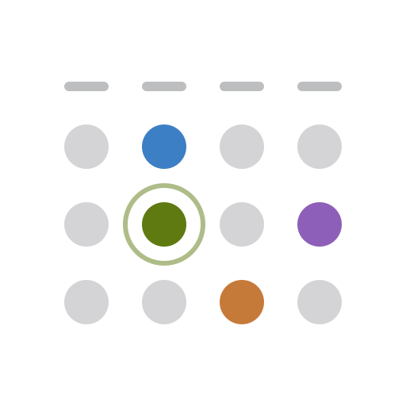
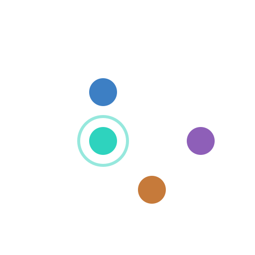

Alarms that follow your real schedule.
DateDot Labs — a Big Mountain Outpost studio
Most alarm apps think in weekdays. DateDots thinks in dates. Build a routine, a group of alarms that belong together, and put it on the exact days you need it. One look at the month shows what is coming and which days are still clear. Made for anyone whose weeks are not identical.
Put routines on real dates instead of "every Tuesday". Every routine gets its own colour and shape, so you can see which days are full and which are empty.
Switch to List and every upcoming alarm is in one place, in order, under the day it rings. Tap one to change anything about it.
Bundle alarms that go together: wake up, stretch, shower, head out. Build it once, then put the whole set on as many days as you like.
Plan backwards from a moment: three hours before, one hour before, right on time. Drop it onto a date and every alarm lands where it should.
Quiet one alarm for one day and it rings normally on every other day, so there is nothing to remember to switch back on.
Import dates from a spreadsheet (.xlsx, .xls, .csv and more) or your phone's calendar. It is read entirely on your device and previewed before anything is created.
On Android: a full-screen alarm on the lock screen, and a banner that stays put over whatever you are doing while unlocked, so it never buries itself in the notification shade. An optional heads-up a few minutes early that you can cancel with one tap.
On iPhone: DateDots hands its alarms to your iPhone's own alarm system, so they ring full-screen like the Clock app, even when DateDots is closed. Requires iOS 26 or later.
On both, an Alarm health screen shows whether your alarms are set. One-time, daily and weekday alarms work the way you expect, and every alarm can be snoozed.
No ads. No third-party tracking or analytics. Your alarms stay on your device unless you choose to sign in, with Apple or Google, for backup and sync, and you can delete that copy whenever you like.
A one-time purchase, not a subscription, unlocks cloud backup and sync across your devices, and creating alarms from spreadsheet and calendar imports. Everything else is free, and any import can be previewed for free first.
Like every alarm app, DateDots depends on your phone's own settings to ring on time. Please do not rely on it as your only alarm for anything where missing it could cause harm. Keep a second, independent alarm for those.